Quick start
The typical workflow is to cut the clips first, then interleave them. Each half also works on its own.
- Open a sequenceThe panel finds the active sequence by itself, even if you open it after the panel.
- Select clips and hit CUTSelect clips in the timeline, set the piece length at the top and click CUT.
- Pick an order and hit RUNAt the bottom choose Sequential or Random, check the grid and click RUN.
- Don't like it? UndoEach half has its own Undo that reverts its last action.
Cutter: cutting clips
Cutter works only on the clips selected in the timeline. Each clip is cut starting from its own beginning. Three tabs at the top decide how the piece length is worked out.
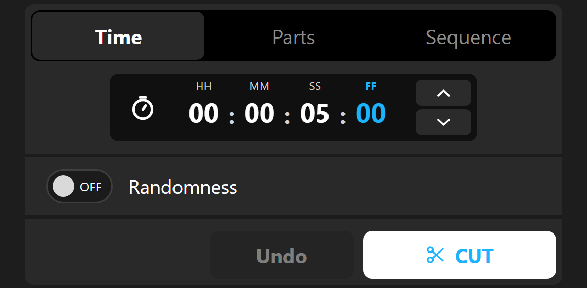
Time: cut at a fixed interval
Enter the length of one piece as a timecode. The default 00:00:05:00 cuts every selected clip every five seconds. The last piece is shorter if the clip doesn't divide evenly.
- Time Parts Sequence
- Switches between the three cutting modes. The active tab is highlighted.
- HH : MM : SS : FF
- Hours, minutes, seconds and frames. You can type into each field. Clicking a field makes it the active one (its label turns blue). FF is active when the panel opens.
- ▲ ▼
- Adds or subtracts 1 in the active field. Hold the button and the value keeps going, gradually speeding up.
- Mouse wheel, arrow keys
- Scroll up or down over a field, or press ↑ ↓ inside it. This changes the field under the pointer directly.
- Overflow
- Values roll over by themselves: typing 30 frames in a 30 fps sequence becomes 1 second. Frames follow the frame rate of the active sequence.
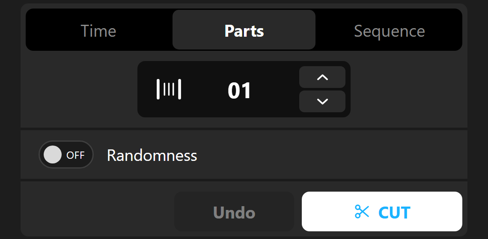
Parts: equal pieces
Instead of a time, you enter a number of parts. Every selected clip is split into that many pieces of equal length, however long it is. A longer clip gets longer parts, a shorter one shorter parts.
- Number of parts
- A number from 1 to 100. Type it, scroll it with the mouse wheel, or change it with the arrow keys. A value of 01 leaves the clip uncut.
- ▲ ▼
- Adds or removes one part. Holding repeats.
- Randomness
- Works the same as on the Time tab, see the next section.
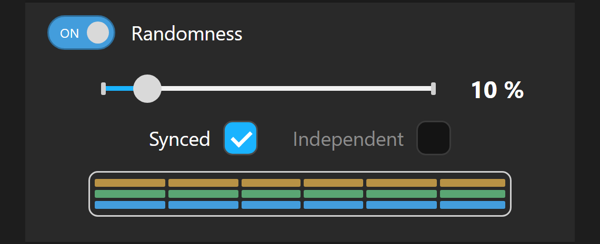
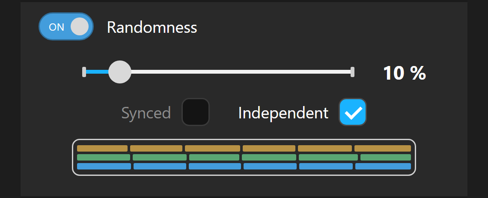
Randomness: pieces of uneven length
The switch sits below the value field on both the Time and Parts tabs. When it is on, each piece gets a random length around the value you set, so the result doesn't look mechanical.
- OFF / ON
- Turns randomness on or off. Off means every piece is exactly the same.
- Slider 1–99 %
- How much a piece's length may vary. At 5 s and 10 %, pieces come out roughly between 4.5 and 5.5 s. The default is 10 %.
- Synced
- Clips that sit exactly on top of each other (same start and end, typically video with its linked audio, or the same clips on several tracks) get the same cuts. Picture and sound stay aligned.
- Independent
- Each clip gets its own random cuts, even when it sits above another one. Useful when you want to scatter the tracks on purpose.
- Colored preview
- An illustration of the difference between Synced and Independent for three tracks. It shows the idea, not the exact result on your sequence.
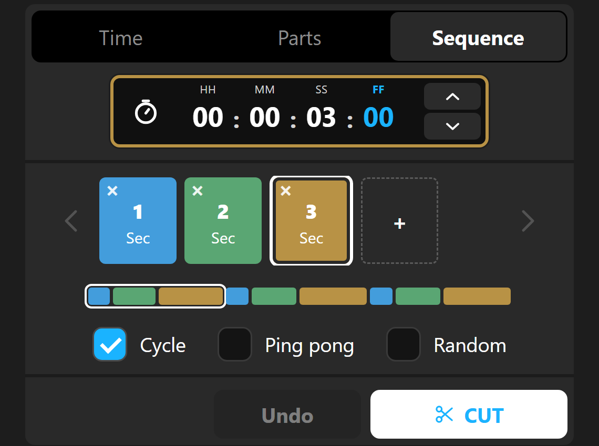
Sequence: your own rhythm of lengths
You build a pattern from several lengths, for example 1 s, 2 s, 3 s. Cutter then cuts the clip by repeating that pattern, giving you an edit with a rhythm instead of identical pieces.
- Colored tiles
- The individual lengths in the pattern. Click a tile to select it: it gets a white outline and the timecode field above takes on its color. Whatever you set in the field then applies to that tile.
- Timecode field
- Works just like on the Time tab (typing, arrows, mouse wheel). The length must be greater than 00:00:00:00.
- +
- Adds a new tile at the end. It copies the length of the last tile and is selected right away.
- ✕ on a tile
- Removes the tile. The pattern needs at least two tiles, so the cross is hidden when only two are left.
- ‹ ›
- Scroll the row of tiles when they don't fit in the panel.
- Preview strip
- Shows how the lengths line up one after another. The white outline marks the first pass through the pattern.
Cycle
The pattern repeats the same way every time: 1, 2, 3, 1, 2, 3…
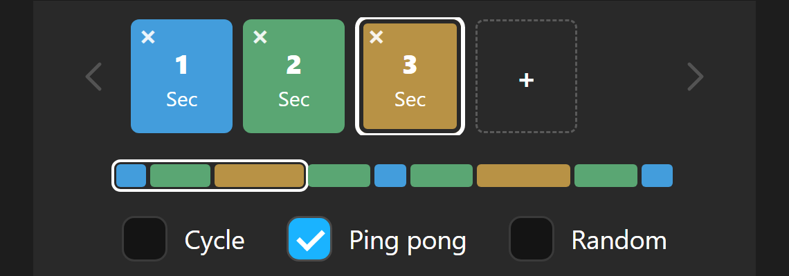
Ping pong
Back and forth: 1, 2, 3, 2, 1, 2, 3… The end length is not repeated twice in a row at the turn.
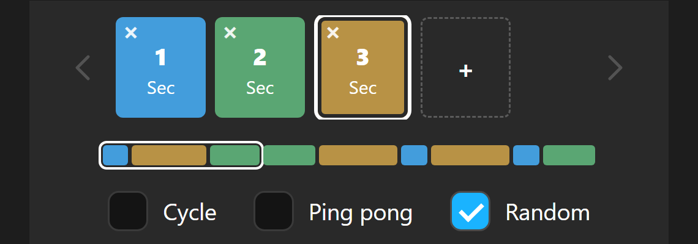
Random
The whole pattern is reshuffled after every pass. Each length appears exactly once per round, just in a different order each time.
CUT and Undo
- ✂ CUT
- Cuts the selected clips according to the active tab. A status line appears below the buttons, for example “Done – 24 cuts made across 3 clips.” On a large selection a percentage progress bar shows up too.
- Undo
- Reverts the last CUT. It stays grey until you've cut something. Under the hood it runs Premiere's own Undo as many times as CUT made cuts. If some of them can't be reverted, the panel tells you how many, and you can finish the rest with Ctrl+Z.
- ✕ on a message
- Closes the status message below the buttons.
Weaver: interleaving tracks
Weaver takes the clips from all video tracks in the sequence (the selection doesn't matter) and lines them up on the timeline so the tracks take turns. Every clip stays on its own track and only moves in time. It starts where the earliest clip was, and the pieces butt up against each other with no gaps.
Three tracks cut by Cutter sit on top of each other. After RUN they alternate V1, V2, V3, V1… and play one after another. Linked audio moves along with the picture.
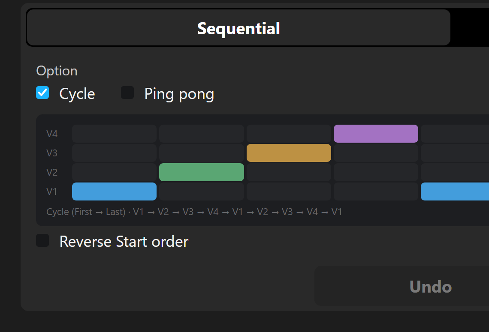
Sequential: regular alternation
The tracks alternate in a fixed order. The grid below the options shows what the order will look like. Its rows match the real video tracks in your sequence; the nine columns are just a sample.
- Sequential Random
- The main order switch: regular or random.
- Cycle
- Round and round in one direction: V1, V2, V3, V4, V1, V2…
- Ping pong
- Back and forth: V1, V2, V3, V4, V3, V2, V1, V2… The end track is not repeated at the turn.
- Reverse Start order
- Flips the starting direction: from the top track down (V4 → V1) instead of bottom up.
- Caption under the grid
- Spells out the chosen order, for example “Cycle (First → Last) · V1 → V2 → V3…”.
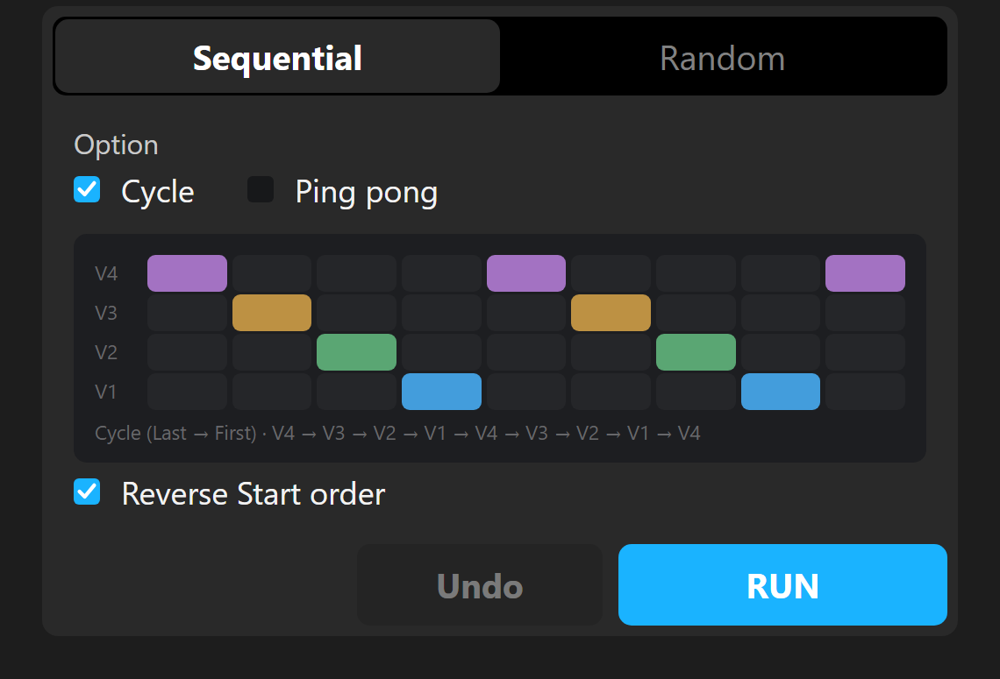
Cycle with a reversed start: V4, V3, V2, V1, V4…
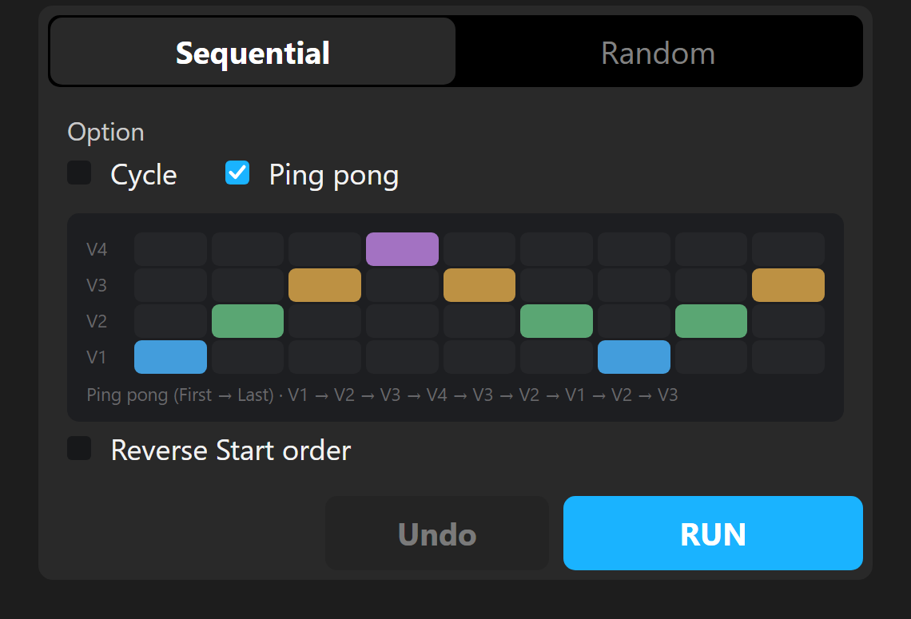
Ping pong from the bottom: V1, V2, V3, V4, V3, V2, V1…
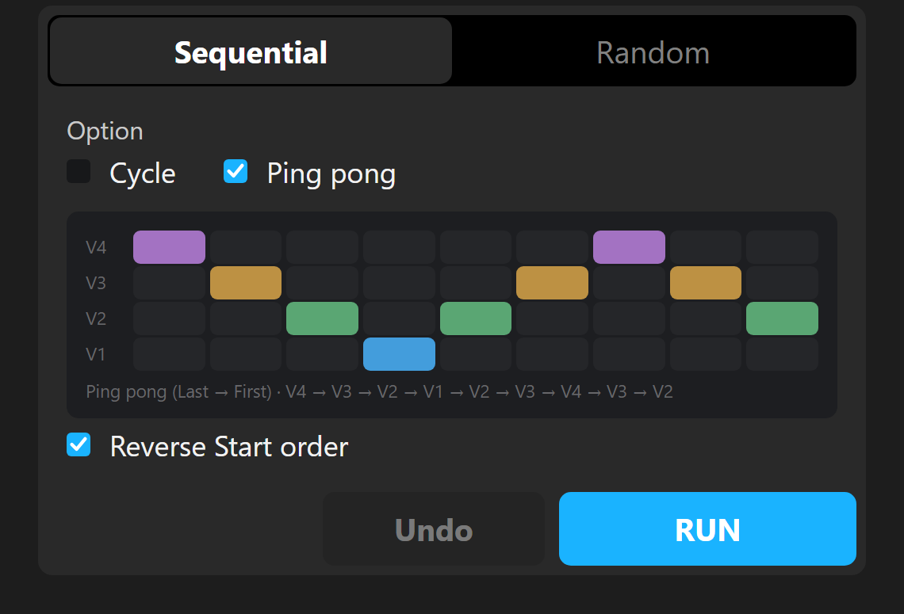
Ping pong from the top: V4, V3, V2, V1, V2, V3…
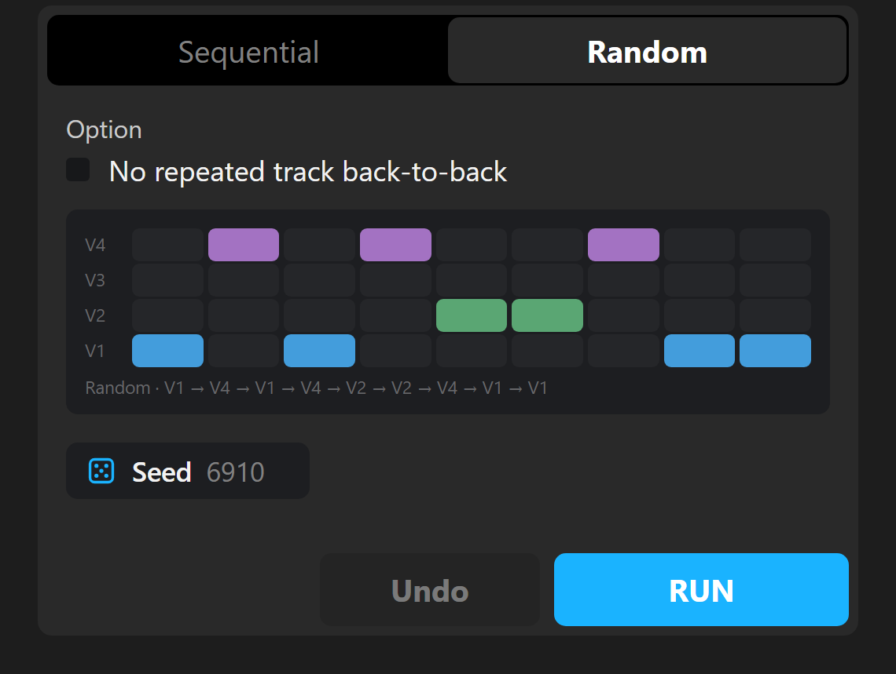
Random: random alternation
Pieces are picked from the tracks at random. The grid and RUN use the same random number (the seed), so the timeline gets exactly the order you see in the preview.
- No repeated track back-to-back
- Makes sure two pieces from the same track never play right after each other. Available only when the sequence has more than two video tracks.
- ⚄ Seed 6910
- Each click rolls a new order and redraws the grid. Keep clicking until you like the preview, then hit RUN.
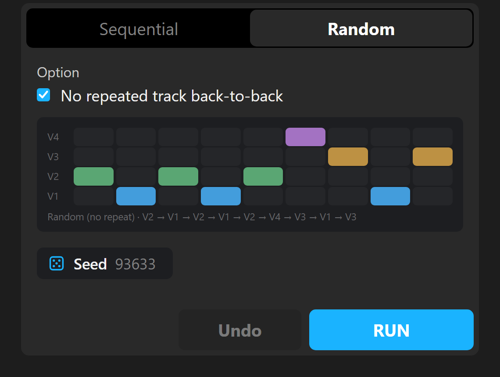
RUN and Undo
- RUN
- Rearranges the clips on the timeline according to your settings. It works directly on the sequence and makes no backup. Without an active sequence that has two video tracks with clips, RUN does nothing and just shows a message.
- Undo
- Moves every shifted clip back to its original place in one click. It works only for the last RUN, and only until you close the panel. If something doesn't go back, the panel lists it and Undo stays active so you can click it again.
Tips and limits
- Locked tracks
- Weaver skips tracks locked with the lock icon in Premiere's track header. Their clips (picture and sound) stay put and aren't counted in the grid. Handy for music or titles.
- Audio in Weaver
- Audio is paired by track number: A1 goes with V1, A2 with V2 and so on, piece by piece in time order. If the matching audio track is missing, Weaver looks for an audio clip with the same start and length. Audio without a match doesn't move.
- Synced in Cutter
- To have picture and sound cut identically, select both and leave Randomness on Synced.
- Short clips
- A clip shorter than the piece length is skipped by Cutter and left unchanged.
- Sequence loading
- If the panel starts before the project has loaded, it keeps looking for the sequence in the background. No need to close and reopen it.
- Help
- The link in the panel header. It doesn't lead anywhere yet in this version.
Panel messages
What the most common messages mean and what to do about them.
| Message | What to do |
|---|---|
| No clips selected in the timeline… | Select the clips you want Cutter to cut in the timeline and hit CUT again. |
| Enter an interval greater than 00:00:00:00. | The Time tab is set to zero. Enter at least one frame. |
| A segment needs to be longer than 00:00:00:00. | A tile in Sequence can't have zero length. |
| Nothing to cut — selection produced no cut points. | The selected clips are shorter than the piece length. Shorten it or use Parts. |
| Sequence info not loaded — try reopening the panel. | The panel hasn't found a sequence yet. Open one in Premiere; if that doesn't help, close and reopen the panel. |
| No video tracks identified. Open a sequence with at least 2 video tracks. | Weaver needs at least two unlocked video tracks that contain clips. |
| Done, but N move(s) failed – see the details below. | Some clips couldn't be moved. The list is below the buttons; consider Undo. |
| Undo only partially completed… | Click Undo again, or finish the rest with Ctrl+Z. |